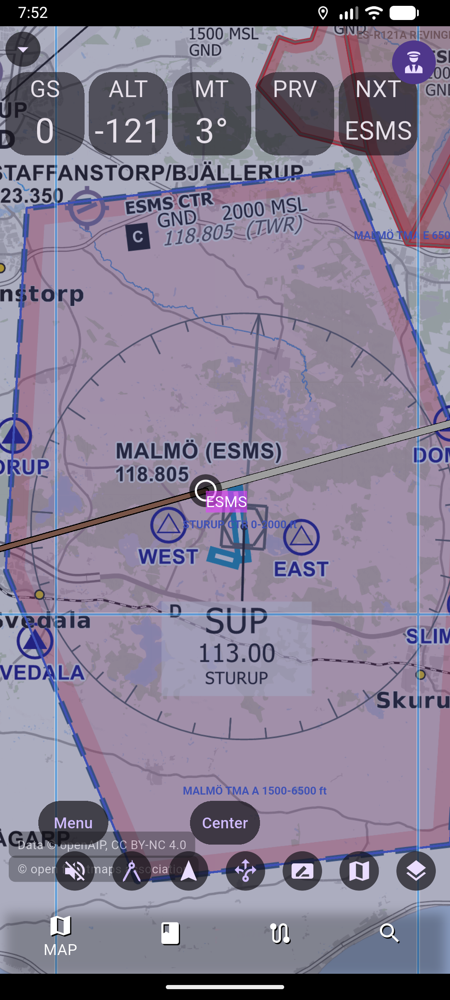
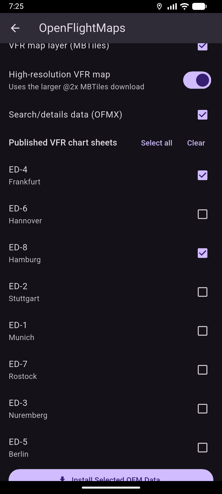
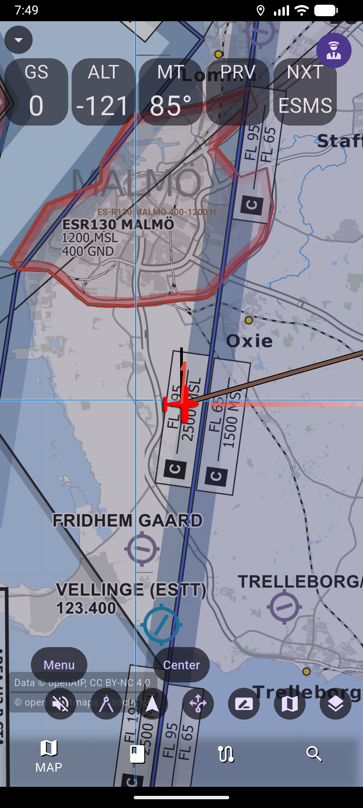
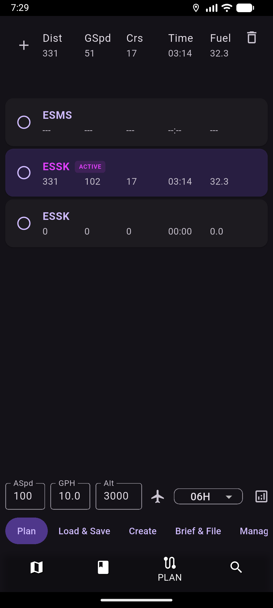

The European electronic flight bag that flies free.
AvareX-EU brings European charts and data to AvareX: OpenFlightMaps VFR charts, openAIP airspace, internet ADS-B traffic and animated weather radar — with a georeferenced moving map, plates and flight planning. Your data stays on your device.
Android, iOS, Windows, macOS, Linux & Raspberry Pi · Works offline once charts are downloaded

European charts
OpenFlightMaps VFR charts & OFMX data, downloaded per region & AIRAC cycle.
openAIP data
Airports, navaids, airspace & obstacles via your own openAIP key.
ADS-B traffic
Optional internet ADS-B (advisory) from OpenSky, plus GDL90 receivers.
Weather radar
Animated global internet radar from RainViewer, right on the map.
A complete cockpit, tuned for Europe
All the AvareX electronic flight bag features, with optional European data providers added on top.
European VFR charts and a moving map you can trust
Fly OpenFlightMaps VFR charts with a georeferenced ownship — track-up or north-up, with range, speed and glide rings. Regional chart data downloads on demand, so the app stays small.
- OpenFlightMaps VFR chart tiles & OFMX aeronautical data
- Movable instrument tiles: GS, ALT, track, ETA, ETE & more
- Region & AIRAC-cycle selection with progress and removal
- Download once, then fly fully offline

Internet ADS-B traffic and animated radar
See advisory ADS-B traffic from the OpenSky Network over the internet, and layer animated RainViewer radar for a quick go/no-go picture — no external hardware required.
- Internet ADS-B traffic (advisory) via OpenSky, plus GDL90 receivers over Wi-Fi
- Animated RainViewer internet radar with selectable color schemes
- METAR, TAF, winds and TFR products where available
- Audible traffic alerts and terrain awareness

openAIP airspace and geo-referenced plates
Add optional openAIP airports, navaids, VFR reporting points, airspace and obstacles using your own personal API key, and shoot approaches with your ownship drawn right on the plate.
- openAIP country data via your own authenticated API key
- Airspace display as a toggle-able interactive data layer
- Geo-referenced approach plates & airport diagrams
- Data cached offline once downloaded

European data, downloaded on demand
European data is fetched only when you ask for it, and stored locally — not bundled into the app package.
OpenFlightMaps
Primary European VFR charts and OFMX airport, runway, comms, navaid, reporting-point and airspace data. Region and AIRAC-cycle aware.
openAIP
Optional supplementary airports, navaids, reporting points, airspace and obstacles using your own openAIP Core API key — no shared credential.
OpenSky Network
Optional internet ADS-B traffic layer for situational awareness (advisory only). Enable it when you want it; leave it off otherwise.
RainViewer
Animated internet weather radar with global coverage, the default radar product in the EU build, with selectable color schemes.
Supplementary docs
Optional aeronautical documents and data from providers such as flybrief and AIP sources, fetched on request.
Flight Intelligence (AI)
Optional AI assistant that talks to an OpenAI-compatible endpoint you configure with your own key. Off until you set it up.
Your flying data stays yours
AvareX-EU has no backend that we operate. Nothing about your flights is sent to us — ever.
No accounts
No sign-up, no login. Just install and fly.
No tracking or ads
No analytics, crash-reporting or advertising SDKs of any kind.
On-device only
Routes, logbook, settings and keys stay in local storage on your device.
Flying with European data in four steps
Install AvareX-EU
Grab the latest build from the GitHub releases page for your platform.
Download a region
Open Menu → Data and download an OpenFlightMaps region and AIRAC cycle for the area you fly.
Add openAIP (optional)
Enter your own openAIP API key, test the connection, and download country data by ISO code (e.g. DE, FR, SE).
Enable the layers you want
Turn on OFM VFR Chart, openAIP interactive data, internet ADS-B traffic and RainViewer radar in the map controls.
Frequently asked questions
What is AvareX-EU?
AvareX-EU is a free, open-source European fork of AvareX (by Apps4Av). It keeps AvareX's electronic flight bag features and adds optional European aeronautical data from OpenFlightMaps and openAIP, internet ADS-B traffic from OpenSky, and RainViewer weather radar. European data downloads on demand rather than being bundled in the app.
How do I get European charts?
Open Menu → Data and download an OpenFlightMaps region for the AIRAC cycle you need. For supplementary airspace and obstacle data, enter your own openAIP API key and download country data by ISO code. Everything is stored locally on your device.
Does AvareX-EU track me or show ads?
No. There are no accounts, no analytics, no crash-reporting, no advertising and no tracking SDKs. Your routes, logbook, settings and any API keys stay on your device. The app only reaches the internet when you download data or fetch live weather and traffic. See the privacy policy for details.
Is it certified for navigation?
No. AvareX-EU is not a certified GPS or navigation system and must not be used as a sole means of navigation. European data added by this fork is complementary and not certified. Always cross-check with official sources and certified equipment.
What does it cost?
AvareX-EU is free and open source. You may need your own free openAIP account/API key for openAIP data, and any AI features use an endpoint and key that you supply.
Ready to fly with AvareX-EU?
Free and open source. Download the latest build and add the European data you need.